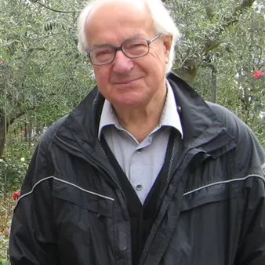

da dom 29 nov a mar 15 dic
Mostra "Vladimir Vremec. Tra il paesaggio e l’arte"
La mostra "Vladimir Vremec. Tra il paesaggio e l'arte" è dedicata ai progetti delle opere più rilevanti di Vladimir Vremec in Slovenia, in particolare a Isola e Pirano. La mostra porta in primo piano il ruolo degli spazi verdi come luoghi di rigenerazione dell'ambiente e di…
 Indicazioni
Indicazioni
- Costi e prenotazioni
- Costo non indicato · Prenotazione non indicata
- Programma
- Programma da verificare. Apri la fonte ufficiale per orari e possibili aggiornamenti.
- In caso di maltempo
- Nessuna indicazione specifica pubblicata.
- Note
- Acquisito automaticamente dalla fonte.
L’EVENTO
Descrizione completa
La mostra Vladimir Vremec. Tra il paesaggio e l'arte è dedicata ai progetti delle opere più rilevanti di Vladimir Vremec in Slovenia, in particolare a Isola e Pirano. La mostra porta in primo piano il ruolo degli spazi verdi come luoghi di rigenerazione dell'ambiente e di incontro tra i cittadini, e non solo come decorazione della vita quotidiana nelle città.
La complessità e la ricchezza visiva dei progetti sottolineano i compiti e le sfide della progettazione del verde. Vladimir Vremec è stato uno degli esponenti più rilevanti e uno dei protagonisti del rinnovamento di questa professione a partire dagli anni Ottanta del XX secolo.
Nato nel 1937 da una famiglia slovena di Opicina, Vremec ha svolto il suo percorso professionale tra Vienna, dove si è formato, Trieste, dove è stato a lungo direttore del settore comunale per il verde pubblico, e la Slovenia, dove ha realizzato tra il 2000 e il 2015 la ristrutturazione di molte aree verdi tra Isola e Pirano. Tra le sue numerose realizzazioni a Trieste si distingue il Roseto nel Parco dell'ex ospedale psichiatrico di San Giovanni a Trieste con una collezione di 3000 varietà di rose, realizzato tra il 2005 e il 2009 al tempo dei suoi interventi in Slovenia.
La mostra è stata ideata e realizzata da Matjaž Mastnak, dendrologo e direttore dell'Arboretum Volčji Potok, parco botanico a Nord di Lubiana. E' stata presentata per la prima volta all'Arboretum e ora è ospitata integralmente a Trieste, grazie a un programma di promozione dell'opera di Vremec con mostre, pubblicazioni e incontri.
Orario di apertura: dal lunedì al venerdì 10.30-13.00; 16.30-18.30. Chiuso nei pomeriggi del 4, 9-11, 14-15 dicembre.
Ingresso libero
IL PROGRAMMA
Programma e orari
Appuntamenti raccolti dalle fonti elencate. Dove manca un orario, non è ancora disponibile in questa scheda.
Programma pubblicato
- Dal 2026-11-29 al 2026-12-15
INFORMAZIONI UTILI
Prima di partire
- Controllare la fonte prima di partire.
ORGANIZZAZIONE